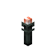

魔窟火把
Doomed Torch
英文名: Doomed Torch命名空间 ID:
eternal_starlight:doomed_torch类型: 方块所属模组: Eternal Starlight资料检索: 🔎 在 MC百科 搜索「魔窟火把」所属标签
获取方式
方块掉落 (1)
eternal_starlight:wall_doomed_torch
用于合成 (1)
原始 JSON
{
"type": "minecraft:crafting_shapeless",
"category": "building",
"ingredients": [
{
"item": "eternal_starlight:doomed_torch"
},
{
"item": "eternal_starlight:chiseled_polished_doomeden_bricks"
}
],
"result": {
"count": 1,
"id": "eternal_starlight:charged_chiseled_polished_doomeden_bricks"
}
}